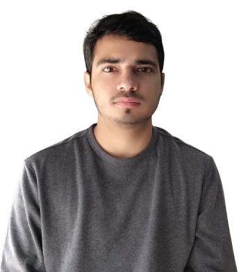

Statistical Learning
Support vector machines, kernel methods, margin-based learning, generalization and robust classification.
STATISTICAL LEARNING · AI · OPTIMIZATION
Ph.D. Candidate in Mathematics · Indian Institute of Technology Indore
I develop mathematically principled and robust learning algorithms for complex, uncertain, high-dimensional, and structured data. My work sits at the intersection of statistical learning theory, optimization, granular computing, and neural learning.

I am a Ph.D. candidate in the Department of Mathematics at IIT Indore, working under the supervision of Prof. M. Tanveer in the OPTIMAL Research Lab.
My research investigates the theoretical and computational foundations of hyperplane-based discriminative learning, with emphasis on empirical risk minimization, regularization, convex optimization, and robust learning.
I also work on granular computing and randomized neural networks, developing region-level and structure-aware learning frameworks that improve robustness, scalability, expressiveness, and generalization.
Support vector machines, kernel methods, margin-based learning, generalization and robust classification.
Convex formulations, robust loss functions, regularization, scalable optimization and theoretical analysis.
Granular-ball learning, region-level geometric abstractions, noise tolerance and efficient classifiers.
RVFL and broad learning systems with graph embedding, multi-view fusion and structured representations.
Graph-structured representations, hypergraphs, multi-view synergy and relational feature learning.
Robustness, uncertainty-aware learning and dependable machine learning for real-world applications.
A region-level learning framework that replaces individual training samples with granular balls to improve computational efficiency and robustness.
Read publication ↗Current work explores richer geometric and structural representations that can capture hierarchical interactions, heterogeneous modalities, and relational dependencies.
View research portfolio ↗Neural Networks
Pattern Recognition
IEEE Transactions on Neural Networks and Learning Systems